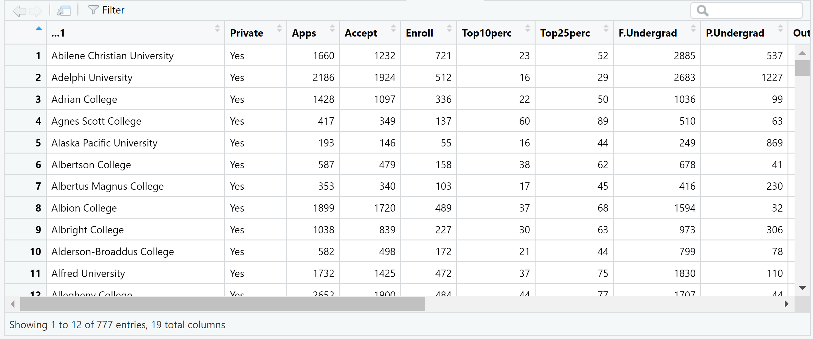

Practical 1
For the tasks below, you will require the College dataset from the core textbook (James et. al 2021).
Click here to download the file: College.csv .
Remember to place your data file in a separate subfolder within your R project working directory.
The College dataset contains statistics for a large number of US Colleges from the 1995 issue of US News and World Report. It is a data frame with 777 observations and 18 variables. The variables are:
- Private : Public/private indicator
- Apps : Number of applications received
- Accept : Number of applicants accepted
- Enroll : Number of new students enrolled
- Top10perc : New students from top 10% of high school class
- Top25perc : New students from top 25% of high school class
- F.Undergrad : Number of full-time undergraduates
- P.Undergrad : Number of part-time undergraduates
- Outstate : Out-of-state tuition
- Room.Board : Room and board costs
- Books : Estimated book costs
- Personal : Estimated personal spending
- PhD : Percent of faculty with Ph.D.’s
- Terminal : Percent of faculty with terminal degree
- S.F.Ratio: Student/faculty ratio
- perc.alumni : Percent of alumni who donate
- Expend : Instructional expenditure per student
- Grad.Rate : Graduation rate
Task 1
Import the dataset in an object called college using the tidyverse read_csv() function.
If you then have a look at the contents of the data object using View(),
you will notice that the first column contains the names of all of the
universities in the dataset. You will also notice that it has a strange
name.

Actually, these data should not be treated as a variable (column) since it is just a list of university names.
Task 2
Keeping the list of names in the data object, transform this column such
that the university names in the column become row names. Hint: use the
column_to_rownames() function from dplyr.
How would have your approach to this task differed if you would have imported the dataset using base R? Try it!
Task 6
Using the Top10perc variable, create a new categorical variable called
Elite such that universities are divided into two groups based on
whether or not the proportion of students coming from the top 10% of
their high school classes exceeds 50%. Hint: use a combination of
mutate() and if_else().
Task 7
Produce side by side box plots of the new Elite variable and
Outstate.
How would you produce a similar plot using base R?
Task 8
Use base R to produce a multipanel plot that displays histograms of the
following variables: Apps, perc.alumni, S.F.Ratio, Expend. Hint:
use par(mfrow=c(2,2)) to set up a 2x2 panel. Try to adjust the
specifications (e.g. breaks).
Task 9
Using Accept and Apps, create a new variable that describes
acceptance rate. Name this variable acceptance_rate. Hint: use
mutate().